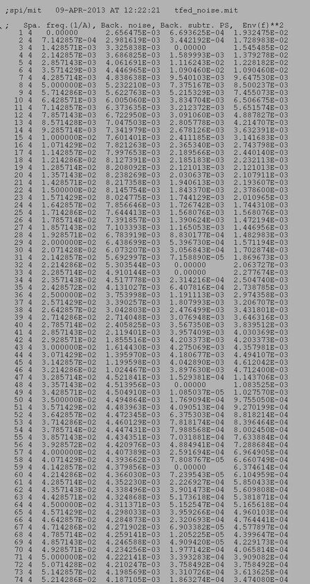
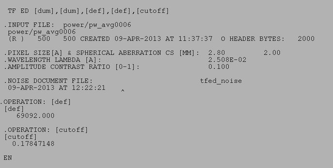

(Portion only)

| .OPERATION: | TF ED [def],[cutoff] | ; Estimate Defocus |
| .INPUT FILE: | pw_avg0006 | ; Power spectrum image (input) |
| .PIXEL SIZE [A] & SPHERICAL ABBERATION CS [MM]: | 2.8, 2 | ; Pixel size, Spherical aberration |
| .WAVELENGTH LAMBDA [A]: | 200 | ; Electron wavelength |
| .AMPLITUDE CONTRAST RATIO [0-1]: | 0.1 | ; Ampl. contrast ratio |
| .DEFOCUS NOISE DOC FILE: | tfed_noise | ; Noise doc file (output) |
| INPUT IMAGE (Portion only) |
|---|
| |
| INPUT POWER SPECTRUM IMAGE |
|---|
 |
| pw_avg0006 |
| OUTPUT NOISE DOC FILE (Portion) |
|---|
|  |
| tfed _noise |
| RESULTS FILE (Portion) |
|---|
|  |
| SPIDER Results file |